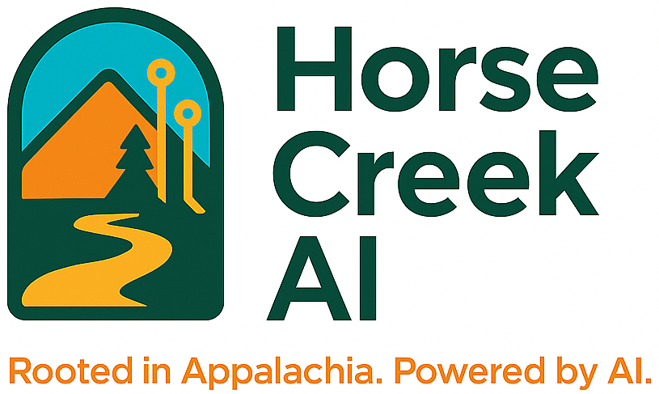

AI Starter Kit for Small Businesses
Horse Creek AI
Rooted in Appalachia. Powered by AI.
1. Introduction
Artificial Intelligence (AI) is no longer just for tech giants. Small businesses and nonprofits can now use AI to save time, reduce costs, and improve customer engagement. This guide introduces you to free and low-cost AI tools that can make an immediate impact.
2. Top Free & Low-Cost AI Tools
- ChatGPT: Write content, emails, and get quick answers (free via OpenAI or Poe).
- Canva with Magic Write: AI-powered design and writing tools for social media, flyers, and more.
- DALL·E: Generate unique images from text prompts for your website or campaigns.
- Zapier: Automate workflows between your apps without coding.
- Grammarly: AI-powered writing assistant to clean up your writing and tone.
3. Setup Instructions
- Visit the tool’s website and sign up for a free account (e.g., chat.openai.com for ChatGPT).
- Follow onboarding steps—many include tutorials or help docs.
- Try simple tasks, like drafting a welcome email or generating a post idea.
4. Use Cases
- Marketing: Create blog posts, social captions, flyers, and ad headlines.
- Automation: Auto-send reminders, collect form responses, and integrate with CRMs.
- Productivity: Draft emails, summarize long articles, and create checklists or guides.
5. Prompt Writing Tips
- Be specific about what you want (e.g., “Write a social media post for a nonprofit about summer programs”).
- Give context and role (“You are a small business marketing assistant…”).
- Ask for examples or variations (“Give me 3 subject lines for a donation email”).
6. Explore Without Coding
Most AI tools today don’t require any coding. You can explore tools like RunwayML, Lumen5, or Notion AI with just clicks and drag/drop features. Great for beginners!
7. Final Tips
- Start small—choose one tool and one task.
- Set a timer and experiment for 20 minutes per day.
- Ask others what they’ve tried—learn from peers!
- Stay updated as AI tools evolve quickly.
